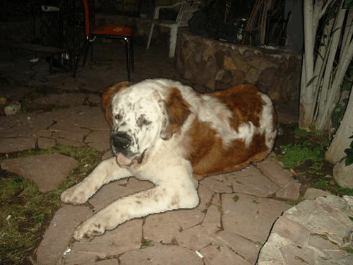

Local Scale Equivariance with a Latent Deep Equilibrium Canonicalizer
Md Ashiqur Rahman, Chiao-An Yang, Michael N. Cheng, Lim Jun Hao, Jeremiah Jiang, Teck-Yian Lim, Raymond A. Yeh
Purdue University & DSO National Laboratories
Global vs. Local Scaling
🌍 Global Scaling
Uniformly resizes the entire image — like zooming in/out with a camera. Widely studied but rarely encountered in isolation.
🎯 Local Scaling
Different objects change size independently. A closer dog appears larger while distant mountains stay small. This complex, real-world phenomenon breaks assumptions made by global-scale methods.

Our Contributions
- We formalize monotone scaling as a mathematically tractable proxy for local image warping and prove it forms a group.
- We propose the Deep Equilibrium Canonicalizer (DEC), a latent module that learns to undo local scaling via an implicit fixed-point solver.
- We demonstrate consistent performance gains on ImageNet, MNIST, and semantic segmentation benchmarks across multiple backbones.
Monotone Scaling: A Clean Approximation
1D Intuition: Stretching a Rubber Band
Global scaling stretches the whole band evenly. Monotone scaling lets each segment stretch differently, defined by a strictly increasing mapping \(l(x)\). The operation \[ S(f; l)(x) = f\big(l^{-1}(x)\big) \] preserves order and invertibility.

2D Extension: Warping an Image Grid
Applying independent monotone mappings to rows & columns yields a smooth, non-folding warp. Requiring commutative Jacobians ensures the set is closed under composition & inversion — a group.
\( S(I; l)(x,y) = I\big(l^{-1}(x,y)\big) \)

Deep Equilibrium Canonicalizer (DEC)
DEC amortizes the expensive optimization usually required for canonicalization. A DEQ module predicts optimal warp parameters as a fixed point of a learned update rule, applied inside the network's feature space.
- 1.
Feature map \(F_k\) enters the DEC.
- 2.
The DEQ solver rapidly predicts \(\Phi_k\), the local scaling parameters.
- 3.
We canonicalize the features via \(S^{-1}(F_k; \Phi_k)\).
- 4.
The standard layer processes the normalized features.
- 5.
The warp is re-applied so the next layer receives equivariant representations.
Qualitative Results
For full quantitative results, see our ICCV 2025 paper.